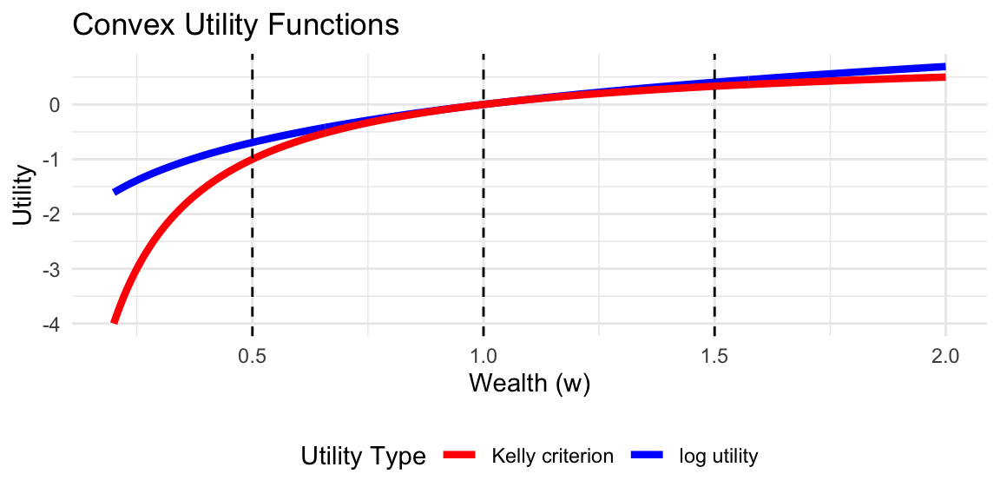
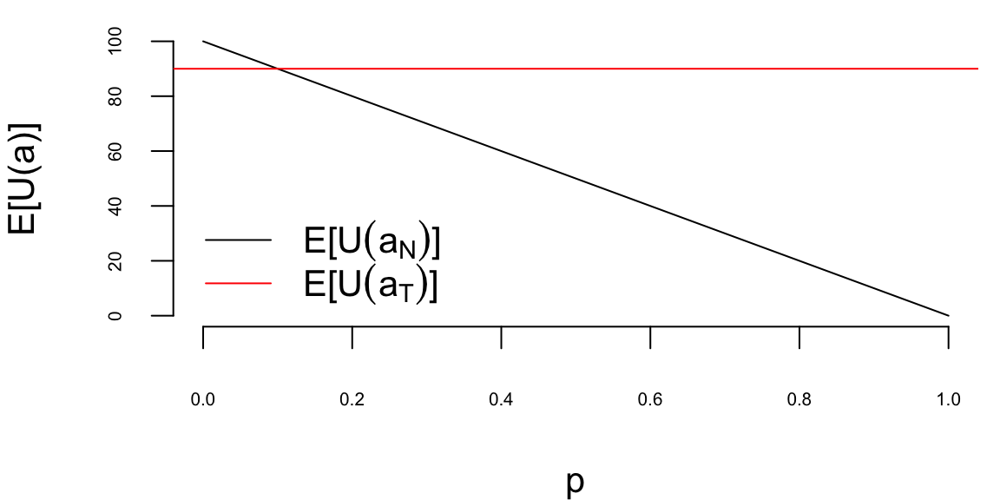

“I would never die for my beliefs because I might be wrong.” – Bertrand Russell
Life is about making decisions under uncertainty. We always prefer informed decisions. Statistical decision theory studies the process of finding a reasonable course of action when faced with statistical uncertainty–uncertainty that can in part be quantified from observed data. In most cases, the problem can be separated into two problems: a learning problem or parameter estimation problem and then a decision problem that uses the output of the learning problem. In finance, a classic example of this is finding optimal portfolios with a mean-variance utility/criterion function assuming the underlying means, variances and covariances are unknown based on a historical sample of data. In statistics, the classic problem is using decision theory to evaluate the relative merits of different parameter estimators and hypothesis tests.
4.1 Expected Utility
Let \(P,Q\) be two possible risky gambles or probability bets. An agent’s preferences can then be specified as an ordering on probability bets where we write \(P\) is preferred to \(Q\) as \(P \succeq Q\) and indifference as \(P \sim Q\). A compound or mixture bet is defined by the probability assignment \(p P + (1 - p ) Q\) for a prospect weight \(0 \leq p \leq 1\).
Ramsey-de Finetti-Savage show that if an agent’s preferences satisfy a number of plausible axioms – completeness, transitivity, continuity and independence – then they can be represented by the expectation of a utility function. The theory is a normative one and not necessarily descriptive. It suggests how a rational agent should formulate beliefs and preferences and not how they actually behave.
This representation of preferences in terms of expected utility \(U(P)\) of a risky gamble is then equivalent to \[
P \succeq Q \; \; \iff \; \; U (P) \geq U (Q )
\] Therefore, the higher the value taken by the utility function the more the gamble is preferred. Specifically, the axioms lead to existence of expected utility and uniqueness of probability.
The two key facts then are uniqueness of probability and existence of expected utility. Formally,
If \(P \succeq R \succeq Q\) and \(w P + (1 - w ) Q \sim R\) then \(w\) is unique.
There exists an expected utility \(U(\cdot )\) such that \(P \succeq Q ~ \iff ~ U (P) \geq U (Q)\). Furthermore \[
U \left (w P + (1 - w ) Q \right ) = wU (P) +(1 - w ) U(Q)
\] for any \(P, Q\) and \(0 \leq w \leq 1\).
This implies that \(U\) is additive and it is also unique up to affine transformation.
Proof: If \(w\) is not unique then \(\exists w_1\) such that \(w_1 P + (1 - w_1 ) Q \sim R\). Without loss of generality assume that \(w_1 < w\) and so \(0 < w - w_1 < 1 - w_1\). However, we can write the bet \(Q\) as \[
Q = \left ( \frac{w-w_1}{1-w_1} \right ) Q + \left ( \frac{1-w}{1-w_1} \right ) Q
\] By transitivity, as \(P \succeq Q\) we have \[
\left ( \frac{w-w_1}{1-w_1} \right ) P + \left ( \frac{1-w}{1-w_1} \right ) Q \succeq Q
\] However, \[
w P + ( 1 - w) Q = w_1 P + (1 - w_1 ) \left ( \left ( \frac{w-w_1}{1-w_1} \right ) P + \left ( \frac{1-w}{1-w_1} \right ) Q
\right )
\] implying by transitivity that \[
w P + (1 - w ) Q \succeq w_1 P + (1 - w_1 ) Q
\] which is a contradiction.
This can be used together with the axioms to then prove the existence and uniqueness of a utility function.
Theorem 4.1 If \(V\) is any other function satisfying these results then \(V\) is an affine function of \(U\).
Proof. If \(\forall P , Q\) we have \(P \sim Q\), then define \(u(P) \equiv 0\). Hence suppose that there exists \(S \succ T\). Define \(U(S) =1\) and \(U(T)=0\). For any \(P \in \mathcal{P}\) there are five possibilities: \(P \succ T\) or \(P \sim S\) or \(S \succ P \succ T\) or \(P \sim T\) or \(T \succ P\).
In the first case define \(1/U(P)\) to be the unique \(p\) (see previous theorem) defined by \(p P + ( 1 -p )T \sim S\). In the second case, define \(U(P) =1\). In the third, there exists a unique \(q\) with \(q S + ( 1 -q )T \sim P\) and then define \(U(P)=q\). In the fourth case, define \(U(P)=0\) and finally when \(T \succ P\) there exists a unique \(r\) with \(r S + ( 1-r )P \sim T\) and then we define \(U(P) = - r / (1 - r)\).
Then check that \(U(P)\) satisfies the conditions. See Savage (1954), Ramsey (1927) and de Finetti (1931)
Other interesting extensions: how do people come to a consensus (DeGroot, 1974, Morris, 1994, 1996). Ramsey (1926) observation that if someone is willing to offer you a bet then that’s conditioning information for you. All probabilities are conditional probabilities.
If the bet outcome \(P\) is a monetary value, then the utility functions \(P, P^2, \sqrt{P}, \ln P\) are all monotonically increasing (the more the better). However, the utility function \(P^2\) is convex and the utility function \(\ln P\) is concave. The concavity of the utility function implies that the agent is risk averse and the convexity implies that the agent is risk seeking.
Example 4.1 (Saint Petersburg Paradox) The Saint Petersburg paradox is a concept in probability and decision theory that was first introduced by Daniel Bernoulli in 1738. It revolves around the idea of how individuals value risky propositions and how those valuations may not align with classical expected utility theory.
The paradox is named after the city of Saint Petersburg, where the problem was formulated. Here’s a simplified version of the paradox:
Imagine a gambling game where a fair coin is flipped repeatedly until it lands on heads. The payoff for the game is \(2^N\), where \(N\) is the number of tosses needed for the coin to land on heads. The expected value of this game, calculated by multiplying each possible payoff by its probability and summing the results, is infinite:
This means that, in theory, a rational person should be willing to pay any finite amount to play this game, as the expected value is infinite. However, in reality, most people would be unwilling to pay a large amount to play such a game.
The paradox arises because traditional expected utility theory assumes that individuals make decisions based on maximizing their expected gain. Bernoulli argued that people do not maximize expected monetary value but rather expected utility, where utility is a subjective measure of satisfaction or happiness. He proposed that individuals exhibit diminishing marginal utility for wealth, meaning that the additional satisfaction gained from an extra unit of wealth decreases as total wealth increases.
In the case of the Saint Petersburg paradox, although the expected monetary value is infinite, the utility gained from each additional dollar diminishes rapidly, leading to a reluctance to pay large amounts to play the game.
In modern decision theory and economics, concepts like diminishing marginal utility and expected utility are fundamental in understanding how individuals make choices under uncertainty and risk. The Saint Petersburg paradox highlights the limitations of relying solely on expected monetary value in explaining human behavior in such situations.
One common approach is to consider aspects of potential players, such as their possible risk aversion, available funds, etc., through a utility function \(U(x)\). Applying a utility function in this situation means changing our focus to the quantity \[
E[U(X)] = \sum^\infty_{k=1} 2^{-k} U(2^k).
\]
Some examples of utility functions are,
\(U(x) = V_0 (1-x^{-\alpha})\), \(\alpha > 0\), which gives an expected utility of \(V_0 \left(1-\frac{1}{2^{\alpha+1}-1}\right)\)
Log utility, \(U(x) = \log(x)\), with expected value \(2 \log(2)\).
Notice that after obtaining an expected utility value, you’ll have to find the corresponding reward/dollar amount.
For the log utility case, we need to find the certain dollar amount \(x^*\) that provides the same utility as playing the game. Setting \(U(x^*) = 2\log(2)\), we solve: \[
\log(x^*) = 2\log(2) = \log(2^2) = \log(4)
\] which gives \(x^* = 4\). Therefore, under log utility, a rational player would be willing to pay at most $4 to play the Saint Petersburg game, despite its infinite expected monetary value. This is a dramatic reduction from infinity and demonstrates how risk aversion (captured by the concave log utility function) resolves the paradox.
Similarly, for the power utility \(U(x) = V_0 (1-x^{-\alpha})\) with \(\alpha > 0\), we have an expected utility of \(V_0 \left(1-\frac{1}{2^{\alpha+1}-1}\right)\). To find the certainty equivalent \(x^*\), we solve: \[
V_0 (1-(x^*)^{-\alpha}) = V_0 \left(1-\frac{1}{2^{\alpha+1}-1}\right)
\] which simplifies to \((x^*)^{-\alpha} = \frac{1}{2^{\alpha+1}-1}\), giving: \[
x^* = \left(2^{\alpha+1}-1\right)^{1/\alpha}
\] For example, with \(\alpha = 1\), we get \(x^* = (2^2-1)^1 = 3\) dollars. As risk aversion increases (larger \(\alpha\)), the certainty equivalent further decreases.
Now, consider a more general situation, when you have two gambles 1: get \(P_1\) for sure, 2: get \(P_2 = P_1+k\) and \(P_3 = P_1-k\) with probability 1/2. Then we will compare the utility of those gambles \[
\dfrac{1}{2}U(P_2) + \dfrac{1}{2}U(P_3) \text{ and } U(P_1).
\] If the utility function is linear then we should be indifferent between the two gambles. However, if the utility function is concave then we should prefer the sure thing. This is known as the certainty effect. \[
\dfrac{1}{2}U(P_2) + \dfrac{1}{2}U(P_3) < U(P_1).
\]
The usual situation can be described as follows. Let \(\Omega\) be a finite set of possible outcomes with \(\Omega = \{ \omega_1 , \ldots , \omega_n \}\). Let \(P_i\) be the consequence that assigns one to outcome \(\omega_i\) and zero otherwise and let \(P = ( p_1 , \ldots , p_n )\) assign probability \(p_i\) to outcome \(\omega_i\). Then we can write the expected utility, \(U(P)\), of the gamble \(P\) as \[
U(P) = \sum_{i=1}^n p_i U( P_i ).
\] That is, the utility of \(P\) is the expected value of a random variable \(W\) (wealth) that takes the value \(U(P_i)\) if the outcome is \(\omega_i\). Therefore, we can write \(U(P) = \mathbb{E}_P \left ( U( W ) \right)\).
This leads us to the notion of risk aversion and a categorization of agents according to their risk tolerance: the agent is said to be
Risk Averse if \(\mathbb{E}_P \left ( U(W) \right ) \leq u \left ( \mathbb{E}_P (W) \right )\)
Risk Neutral if \(\mathbb{E}_P \left ( U(W) \right ) = u \left ( \mathbb{E}_P (W) \right )\)
Risk Seeking if \(\mathbb{E}_P \left ( U(W) \right ) \geq u \left ( \mathbb{E}_P (W) \right )\)
Here we assume that these hold for all probabilities and random variables. Risk aversion is equivalent to the agent having concave utility and risk seeking convex.
Example 4.2 (Risk Aversion) Consider two concave utility functions log-utility (Kelly) \(U(W)=\log(W)\) and fractional Kelly \(U(W)=\dfrac{W^{1-\gamma} - 1}{1-\gamma}\), when \(\gamma = 1\), we get the log-utility. Both correspond to different risk aversion levels. The log-utility is a special case of the power utility function, which is defined as \(U(W) = \frac{W^{1-\gamma} - 1}{1-\gamma}\) for \(\gamma > 0\). The fractional Kelly criterion is a specific case of the power utility function where \(\gamma = 2\).
w <-seq(0.2, 2, length.out =500)gamma=2# Plot this data framedf <-data.frame(w = w, logu =log(w), kelly = (w^(1-gamma) -1) / (1-gamma))# 3. Plot use different y-scales for ggplot(df, aes(x = w)) +geom_line(aes(y = logu, color ="log utility"), size =1.5) +geom_line(aes(y = kelly, color ="Kelly criterion"), size =1.5) +geom_vline(xintercept =c(0.5, 1, 1.5), linetype ="dashed", color ="black") +scale_color_manual(values =c("log utility"="blue", "Kelly criterion"="red")) +labs(title ="Convex Utility Functions",x ="Wealth (w)",y ="Utility",color ="Utility Type") +theme_minimal() +theme(legend.position ="bottom")

w1 <-0.5w2 <-1.5p <-0.5gamme =2# Utility function (example: log utility)utility1 <-function(w) log(w)utility2 <-function(w) (w^(1- gamma) -1) / (1- gamma)# Calculate expected utilityexpected_utility <- p *utility1(w1) + p *utility1(w2)expected_utility2 <- p *utility2(w1) + p *utility2(w2)# Print expected utilitycat("Expected utility for log utility:", expected_utility, "\n")
Expected utility for log utility: -0.14
cat("Expected utility for Kelly criterion:", expected_utility2, "\n")
Expected utility for Kelly criterion: -0.33
Geometrically, Jensen’s inequality explains the pattern: for a concave function the chord lies below the curve (risk aversion).
Example 4.3 (Kelly Criterion) The Kelly criterion has been used effectively by many practitioners. Ed Thorp, in his book Beat the Dealer, pioneered its use in blackjack and later applied it to investing in financial markets. Since then, many market participants, such as Jim Simons, have stressed the importance of this money management approach. The criterion’s application extends to other domains: Phil Laak described its use for bet sizing in a game-theoretic approach to poker, and Bill Benter applied it to horse racing. Stewart Ethier provided a mathematical framework for multiple outcomes and analyzed a “play the winner” rule in roulette. Claude Shannon also developed a system to detect and exploit unintentionally biased roulette wheels, an endeavor chronicled in the book The Eudaemonic Pie.
Suppose you have $1000 to invest. With probability \(0.55\) you will win whatever you wager and with probability \(0.45\) you lose whatever you wager. What’s the proportion of capital that leads to the fastest compounded growth rate?
Quoting Kelly (1956), the exponential rate of growth, \(G\), of a gambler’s capital is \[
G = \lim_{N\to \infty} \frac{1}{N} \log_2 \frac{W_N}{W_0}
\] for initial capital \(W_0\) and capital after \(N\) bets \(W_N\).
Under the assumption that a gambler bets a fraction of his capital, \(\omega\), each time, we use \[
W_N = (1+\omega)^W (1-\omega)^L W_0
\] where \(W\) and \(L\) are the number of wins and losses in \(N\) bets. We get \[
G = p \log_2(1+\omega)+ q \log_2(1-\omega)
\] in which the limit(s) of \(\frac{W}{N}\) and \(\frac{L}{N}\) are the probabilities \(p\) and \(q\), respectively.
This also comes about by considering the sequence of i.i.d. bets with \[
p ( X_t = 1 ) = p \; \; \text{ and} \; \; p ( X_t = -1 ) = q=1-p
\] We want to find an optimal allocation \(\omega^*\) that maximizes the expected long-run growth rate: \[\begin{align*}
\max_\omega \mathbb{E} \left ( \ln ( 1 + \omega W_T ) \right )
& = p \ln ( 1 + \omega ) + (1 -p) \ln (1 - \omega ) \\
& \leq p \ln p + q \ln q + \ln 2 \; \text{ and} \; \omega^\star = p - q
\end{align*}\]
The solution is \(w^* = 0.55 - 0.45 = 0.1\).
Both approaches give the same optimization problem, which, when solved, give the optimal fraction rate \(\omega^* = p-q\), thus, with \(p=0.55\), the optimal allocation is 10% of capital.
We can generalize the rule to the case of asymmetric payouts \((a,b)\). Then the expected utility function is \[
p \ln ( 1 + b \omega ) + (1 -p) \ln (1 - a \omega )
\] The optimal solution is \[
\omega^\star = \frac{bp - a q}{ab}
\]
If \(a=b=1\) this reduces to the pure Kelly criterion.
A common case occurs when \(a=1\) and market odds \(b=O\). The rule becomes \[
\omega^* = \frac{p \cdot O -q }{O}.
\]
Let’s consider another scenario. You have two possible market opportunities: one where it offers you \(4/1\) when you have personal odds of \(3/1\) and a second one when it offers you \(12/1\) while you think the odds are \(9/1\).
In expected return these two scenarios are identical both offering a 33% gain. In terms of maximizing long-run growth, however, they are not identical.
Table 4.1 shows the Kelly criterion advises an allocation that is twice as much capital to the lower odds proposition: \(1/16\) weight versus \(1/40\).
Table 4.1: Kelly rule
Market
You
\(\Delta\)
\(\omega^\star\)
\(4/1\)
\(3/1\)
\(1/4\)
\(1/16\)
\(12/1\)
\(9/1\)
\(1/10\)
\(1/40\)
The optimal allocation \(\omega^\star = ( p O - q ) / O\) is \[
\frac{ (1/4) \times 4 - (3/4) }{4} = \frac{1}{16} \; \text{ and} \;
\frac{ (1/10) \times 12 - (9/10) }{12} = \frac{1}{40}.
\]
Note, that although the expected return is the same, the risk is different. The first gamble has a higher variance than the second gamble.
Power utility and log-utilities allow us to model constant relative risk aversion (CRRA). The main advantage is that the optimal rule is unaffected by wealth effects. The CRRA utility of wealth takes the form \[
U_\gamma (W) = \frac{ W^{1-\gamma} -1 }{1-\gamma}
\]
The special case \(U(W) = \log (W )\) for \(\gamma = 1\). This leads to a myopic Kelly criterion rule.
4.2 Unintuitive Nature of Decision Making
Example 4.4 (Ellsberg Paradox: Ambiguity Aversion) The Ellsberg paradox is a thought experiment that was first proposed by Daniel Ellsberg in 1961. It is a classic example of a situation where individuals exhibit ambiguity aversion, meaning that they prefer known risks over unknown risks. The paradox highlights the importance of considering ambiguity when making decisions under uncertainty.
There are two urns each containing 100 balls. It is known that urn A contains 50 red and 50 black, but urn B contains an unknown mix of red and black balls. The following bets are offered to a participant:
Bet 1A: get $1 if red is drawn from urn A, $0 otherwise
Bet 2A: get $1 if black is drawn from urn A, $0 otherwise
Bet 1B: get $1 if red is drawn from urn B, $0 otherwise
Bet 2B: get $1 if black is drawn from urn B, $0 otherwise
Example 4.5 (Allais Paradox: Independence Axiom) The Allais paradox is a choice problem designed by Maurice Allais to show an inconsistency of actual observed choices with the predictions of expected utility theory. The paradox is that the choices made in the second problem seem irrational, although they can be explained by the fact that the independence axiom of expected utility theory is violated.
We run two experiments. In each experiment a participant has to make a choice between two gambles.
Experiment 1
Gamble \({\cal G}_1\)
Gamble \({\cal G}_2\)
Win
Chance
Win
Chance
$25m
0
$25m
0.1
$5m
1
$5m
0.89
$0m
0
$0m
0.01
Experiment 2
Gamble \({\cal G}_3\)
Gamble \({\cal G}_4\)
Win
Chance
Win
Chance
$25
0
$25m
0.1
$5
0.11
$5m
0
$0m
0.89
$0m
0.9
The difference in expected gains is identical in two experiments
However, typically a person prefers \({\cal G}_1\) to \({\cal G}_2\) and \({\cal G}_4\) to \({\cal G}_3\), we can conclude that the expected utilities of the preferred is greater than the expected utilities of the second choices. The fact is that if \({\cal G}_1 \geq {\cal G}_2\) then \({\cal G}_3 \geq {\cal G}_4\) and vice-versa.
Assuming the subjective probabilities \(P = ( p_1 , p_2 , p_3)\). The expected utility \(E ( U | P )\) is \(u ( 0 ) = 0\) and for the high prize set \(u ( \$ 25 \; \text{million} ) = 1\). Which leaves one free parameter \(u = u ( \$ 5 \; \text{million} )\).
Hence to compare gambles with probabilities \(P\) and \(Q\) we look at the difference \[
E ( u | P ) - E ( u | Q ) = ( p_2 - q_2 ) u + ( p_3 - q_3 )
\]
For comparing \({\cal G}_1\) and \({\cal G}_2\) we get \[\begin{align*}
E ( u | {\cal G}_1 ) - E ( u | {\cal G}_2 ) &= 0.11 u - 0.1 \\
E ( u | {\cal G}_3 ) - E ( u | {\cal G}_4 ) &= 0.11 u - 0.1
\end{align*}\] The order is the same, given your \(u\). If your utility satisfies \(u < 0.1/0.11 = 0.909\) you take the “riskier” gamble.
Example 4.6 (Winner’s Curse) One of the interesting facts about expectation is that when you are in a competitive auctioning game then you shouldn’t value things based on pure expected value. You should take into consideration the event that you win \(W\). Really you should be calculating \(E(X\mid W)\) rather than \(E(X)\).
The winner’s curse: given that you win, you should feel regret: \(E(X\mid W) < E(X)\).
A good example is claiming racehorse whose value is uncertain.
Value
Outcome
0
horse never wins
50,000
horse improves
Simple expected value tells you \[
E(X) = \frac{1}{2} \cdot 0 + \frac{1}{2} \cdot 50,000 = \$25,000.
\] In a $20,000 claiming race (you can buy the horse for this fixed fee ahead of time from the owner) it looks like a simple decision to claim the horse.
It’s not so simple! We need to calculate a conditional expectation. What’s \(E( X\mid W )\), given you win event (\(W\))? This is the expected value of the horse given that you win that is relevant to assessing your bid. In most situations \(E(X\mid W) < 20,000\).
Another related feature of this problem is asymmetric information. The owner or trainer of the horse may know something that you don’t know. There’s a reason why they are entering the horse into a claiming race in the first place.
Winner’s curse implies that immediately after you have won, you should feel a little regret, as the object is less valuable to you after you have won! Or put another way, in an auction nobody else in the room is willing to offer more than you at that time.
Example 4.7 (The Hat Problem) There are \(N\) prisoners in a forward facing line. Each guy is wearing a blue or red hat. Everyone can see all the hats in front of him, but cannot see his own hat. The hats can be in any combination of red and blue, from all red to all blue and every combination in between. The first guy doesn’t know his own hat.
A guard is going to walk down the line, starting in the back, and ask each prisoner what color hat they have on. They can only answer “blue” or “red.” If they answer incorrectly, or say anything else, they will be shot dead on the spot. If they answer correctly, they will be set free. Each prisoner can hear all of the other prisoners’ responses, as well as any gunshots that indicate an incorrect response. They can remember all of this information.
There is a rule that all can agree to follow such that the first guy makes a choice (“My hat is …”) and everyone after that, including the last guy, will get their color right with probability \(1\). You have a \(100\)% chance of saving all but the last prisoner, and a \(50\)% chance of saving that one. Here’s the strategy the prisoners have agreed on. The last prisoner counts the number of blue hats worn; if the number is even, the last prisoner yells “blue”, if odd, yells “red”. If the \(99\)th prisoner hears “blue”, but counts an odd number of blue hats, then his hat must be blue so that the total number of blue hats is even. If he counts an even number of blue hats, then his hat must be red. If the last prisoner yells red, then 99 knows that there are an odd number of blue hats. So 99 counts the number of blue hats he can see. Again, if they are even, his hat is blue, if odd, his hat is red. The 99th prisoner then yells out the color of his hat and is spared. The next prisoner now knows whether the remaining number of blue hats, including his own, is odd or even, by taking into account whether 99 had a blue hat or not. Then by counting the number of blue hats he sees, he knows the color of his hat. So he yells out the color of his hat and is spared. This saves all but the last prisoner, and there is a \(50\)% chance that his hat is the color he shouted out.
One hundred prisoners are too many to work with. Suppose there are two. The last person can save the guy in front of him by shouting out the color of his hat. OK, how about if there are three? The third prisoner can see 0,1, or 2 blue hats. There seem to be three possibilities but only two choices of things to say. But, two of the possibilities have something in common namely the number of blue hats is even. So if the last prisoner yells “blue” then he can tell 1 and 2 that he sees an even number of blue hats. Then the second prisoner, by looking ahead and counting the number of blue hats, knows his must be blue if he sees one blue hat, and red if he sees no blue hats. The last prisoner agrees to yell “red” if the number of blue hats seen is odd. Then if 2 sees a blue hat on 1, his must be red, and if 1 has a red hat, his must be blue. By shouting out the color of his hat, 1 also knows his hat color. Two “blues” or two “reds” in a row mean he wears blue, while one blue and one red means he wears red. OK. This looks like this always works, because there are always only two possibilities as far as the number of blue hats worn they are either even or odd. So, check as in the three-person case that using this strategy (“blue” for an even number of blue hats “red” for an odd number) tells 99 the color of his hat, and then each prisoner in turn can learn the color of his hat by taking into account the parity of the number of blue hats he can see, the parity of the number of blue hats 100 saw and the number of prisoners behind him wearing blue hats.
Example 4.8 (Lemon’s Problem) The lemon problem is an interesting conditional probability puzzle and is a classic example of asymmetric information in economics. It was first proposed by George Akerlof in his 1970 paper “The Market for Lemons: Quality Uncertainty and the Market Mechanism.” The problem highlights the importance of information in markets and how it can lead to adverse selection, where the quality of goods or services is lower than expected.
The basic tenet of the lemons principle is that low-value cars force high-value cars out of the market because of the asymmetrical information available to the buyer and seller of a used car. This is primarily due to the fact that a seller does not know what the true value of a used car is and, therefore, is not willing to pay a premium on the chance that the car might be a lemon. Premium-car sellers are not willing to sell below the premium price so this results in only lemons being sold.
Suppose that a dealer pays $20K for a car and wants to sell for $25K. Some cars on the market are Lemons. The dealer knows whether a car is a lemon. A lemon is only worth $5K. There is asymmetric information as the customer doesn’t know if the particular new car is a lemon. S/he estimates the probability of lemons on the road by using the observed frequency of lemons. We will consider two separate cases:
Let’s first suppose only 10% of cars are lemons.
We’ll then see what happens if 50% are lemons.
The question is how does the market clear (i.e. at what price do car’s sell). Or put another way does the customer buy the car and if so what price is agreed on? This is very similar to winner’s curse: when computing an expected value what conditioning information should I be taking into account?
In the case where the customer thinks that \(p=0.10\) of the car’s are lemons, they are willing to pay \[
E (X)= \frac{9}{10} \cdot 25 + \frac{1}{10} \cdot 5 = \$ 23 K
\] This is greater than the initial $20 that the dealer paid. The car then sells at $23K \(<\) $25K.
Of course, the dealer is disappointed that there are lemons on the road as he is not achieving the full value – missing $2000. Therefore, they should try and persuade the customer its not a lemon by offering a warranty for example.
The more interesting case is when \(p=0.5\). The customer now values the car at \[
E (X) = \frac{1}{2} \cdot 25 + \frac{1}{2} \cdot 5 = \$ 15K
\] This is lower than the $20K – the reservation price that the dealer would have for a good car. Now what type of car and at what price do they sell?
The key point in asymmetric information is that the customer must condition on the fact that if the dealer still wants to sell the car, the customer must update his probability of the type of the car. We already know that if the car is not a lemon, the dealer won’t sell under his initial cost of $20K. So at $15K he is only willing to sell a lemon. But then if the customer computes a conditional expectation \(E( X \mid \mathrm{Lemon})\) – conditioning on new information that the car is a lemon \(L\) we get the valuation \[
E ( X \mid L ) = 1 \cdot 5 = \$ 5K
\] Therefore only lemons sell, at $ 5K, even if the dealer has a perfectly good car the customer is not willing to buy!
Again what should the dealer do? Try to raise the quality and decrease the frequency of lemons in the observable market. This type of modeling has all been used to understand credit markets and rationing in periods of loss of confidence.
Example 4.9 (Envelope Paradox) The envelope paradox is a thought experiment or puzzle related to decision-making under uncertainty. It is also known as the “exchange paradox” or the “two-envelope paradox.” The paradox highlights the importance of carefully considering the information available when making decisions under uncertainty and the potential pitfalls of making assumptions about unknown quantities.
A swami puts \(m\) dollars in one envelope and \(2 m\) in another. He hands on envelope to you and one to your opponent. The amounts are placed randomly and so there is a probability of \(\frac{1}{2}\) that you get either envelope.
You open your envelope and find \(x\) dollars. Let \(y\) be the amount in your opponent’s envelope. You know that \(y = \frac{1}{2} x\) or \(y = 2 x\). You are thinking about whether you should switch your opened envelope for the unopened envelope of your friend. It is tempting to do an expected value calculation as follows \[
E( y) = \frac{1}{2} \cdot \frac{1}{2} x + \frac{1}{2} \cdot 2 x = \frac{5}{4} x > x
\] Therefore, it looks as if you should switch no matter what value of \(x\) you see. A consequence of this, following the logic of backwards induction, that even if you didn’t open your envelope that you would want to switch! Where’s the flaw in this argument?
This is an open-ended problem, but it will not be very confusing if we well understand both the frequentist and bayesian approaches. Actually, this is a very good example to show how these two approaches are different and to check if we understand them correctly. There many conditions in this problem, so we cannot argue everything in this example; instead, we are going to focus on some interesting cases. First, assume we’re risk-neutral (although, we can simply change “money” with “utility” in this paradox, so it doesn’t matter). We will compare frequentist/bayesian, open/not open, and discrete/continuous. The finite, or bounded space, case will not be considered here since they are not very interesting.
If I DO NOT look in my envelope, in this case, even from a frequentist viewpoint, we can find a fallacy in this naive expectation reasoning \(E[trade] = 5X/4\) . First, the right answer from a frequentist view is, loosely, as follows. If we switch the envelope, we can obtain \(m\) (when \(X = m\)) or lose \(m\) (when \(X = 2m\)) with the same probability \(1/2\). Thus, the value of a trade is zero, so that trading matters not for my expected wealth.
Instead, naive reasoning is confusing the property of variables \(x\) and \(m\), \(x\) is a random variable and \(m\) is a fixed parameter which is constant (again, from a frequentist viewpoint). By trading, we can obtain \(x\) or lose \(x/2\) with the same probability. Here, the former \(x=m\) is different from the latter \(X= 2m\). Thus, \(X \frac{1}{2} - \frac{X}{2} \frac{1}{2} = \frac{X}{4}\) is the wrong expected value of trading. On the other hand, from a bayesian view, since we have no information, we are indifferent to either trading or not.
The second scenario is if I DO look in my envelope. As the Christensen & Utts (1992) article said, the classical view cannot provide a completely reasonable resolution to this case. It is just ignoring the information revealed. Also, the arbitrary decision rule introduced at the end of the paper or the extension of it commented by Ross (1996) are not the results of reasoning from a classical approach. However, the bayesian approach provides a systematic way of finding an optimal decision rule using the given information.
We can use the Bayes rule to update the probabilities of which envelope your opponent has! Assume \(p(m)\) of dollars to be placed in the envelope by the swami. Such an assumption then allows us to calculate an odds ratio \[
\frac{ p \left ( y = \frac{1}{2} x | x \right ) }{ p \left ( y = 2 x | x \right ) }
\] concerning the likelihood of which envelope your opponent has.
Then, the expected value is given by \[
E(y\mid x) = p \left ( y = \frac{1}{2} x \mid x \right ) \cdot \frac{1}{2} x +
p \left ( y = 2 x | x \right ) \cdot 2 x
\] and the condition \(E(y) > x\) becomes a decision rule.
Let \(g(m)\) be the prior distribution of \(m\). Applying Bayes’ theorem, we have \[
p(m = x \mid X = x) = \frac{p(X = x \mid m = x) g(x)}{p(X = x)} = \frac{g(x)}{g(x)+g(x/2)}.
\] Similarly, we have \[
p(m = x/2 \mid X = x) = \frac{p(X = x \mid m = x/2) g(x/2)}{p(X = x/2)} = \frac{g(x/2)}{g(x)+g(x/2)}.
\] The Bayesian can now compute his expected winnings from the two actions. If he keeps the envelope he has, he wins \(x\) dollars. If he trades envelopes, he wins \(x/2\) if he currently has the envelope with \(2m\) dollars, i.e., if \(m = x/2\) and he wins \(2\)x if he currently has the envelope with \(m\) dollars, i.e., \(m = x\). His expected winnings from a trade are \[
E(W\mid Trade) = E(Y\mid X = x) = \frac{g(x/2)}{g(x)+g(x/2)} \frac{x}{2} + \frac{g(x)}{g(x)+g(x/2)} 2x.
\] It is easily seen that when \(g(x/2) = 2g(x)\), \(E(W\mid Trade) = x\). Therefore, if \(g(x/2) > 2g(x)\) it is optimal to keep the envelope and if \(g(x/2) < 2g(x)\) it is optimal to trade envelopes. For example, if your prior distribution on \(m\) is exponential \(\lambda\), so that \(g(m) = \lambda e^{-\lambda m}\), then it is easily seen that it is optimal to keep your envelope if \(x > 2\log(2)/\lambda\).
The intuitive value of the expected winnings when trading envelopes was shown to be \(5x/4\). This value can be obtained by assuming that \(g(x)/[g(x) + g(x/2)] =
1/2\) for all \(x\). In particular, this implies that \(g(x) = g(x/2)\) for all x, i.e., \(g(x)\) is a constant function. In other words, the intuitive expected winnings assumes an improper “noninformative” uniform density on \([0, \infty)\). It is of interest to note that the improper noninformative prior for this problem gives a truly noninformative (maximum entropy) posterior distribution.
Most of the arguments in the Christensen & Utts (1992) paper are right, but there is one serious error in the article which is corrected in Bachman-Christensen-Utts (1996) and discussed in Brams & Kilgour (1995). The paper calculated the marginal density of \(X\) like below. \[\begin{align*}
p(X = x) &= p(m = x)g(x) + p(2m = x)g(x/2) \\
&= \frac{1}{2} g(x) + \frac{1}{2} g(x/2)
\end{align*}\] where \(g(x)\) is the prior distribution of \(m\). However, integrating \(p(X = x)\) with respect to \(x\) from \(0\) to \(\infty\) gives \(3/2\) instead of \(1\). In fact, their calculation of \(p(X = x)\) can hold only when the prior distribution \(g(x)\) is discrete and \(p(X = x)\), \(g(m)\), \(g(m/2)\) represent the probabilities that \(X = x\), \(m = m\), \(m = m/2\), respectively.
For the correct calculation of the continuous \(X\) case, one needs to properly transform the distribution. That can be done by remembering to include the Jacobian term alongside the transformed PDF, or by working with the CDF of \(X\) instead. The latter forces one to properly consider the transform, and we proceed with that method.
Let \(G(x)\) be the CDF of the prior distribution of \(m\) corresponding to \(g(x)\). \[\begin{align*}
p(x < X \leq x+dx) &= p(m = x)dG(x)+ p(2m = x)dG(x/2) \\
&= \frac{1}{2} \left( dG(x)+ dG(x/2) \right)
\end{align*}\] where \(g(x) = dG(x)/dx\). Now, the PDF of \(X\) is \[\begin{align*}
f_X(x) &= \frac{d}{dx} p(x < X \leq x + dx) \\
&= \frac{1}{2} \left(g(x) + \frac{1}{2} g(x/2) \right)
\end{align*}\] We have an additional \(1/2\) in the last term due to the chain rule, or the Jacobian in the change-in-variable formula. Therefore, the expected amount of a trade is \[\begin{align*}
E(Y\mid X = x) &= \frac{x}{2} p(2m = x\mid X = x) + 2 x \, p(m = x\mid X = x) \\
&= \frac{x}{2} \frac{g(x)}{g(x) + g(x/2)/2} + 2 x \frac{g(x/2)/2}{g(x) + g(x/2)/2} \\
&= \frac{\frac{x}{2}g(x) + x g(x/2)}{g(x) + g(x/2)/2}
\end{align*}\]
Thus, for the continuous case, trading is advantageous whenever \(g(x/2) < 4g(x)\), instead of the decision rule for the discrete case \(g(x/2) < 2g(x)\).
Now, think about which prior will give you the same decision rule as the frequentist result. In the discrete case, \(g(x)\) such that \(g(x/2) = 2g(x)\), and in the continuous case \(g(x)\) such that \(g(x/2) = 4g(x)\). However, both do not look like useful, non-informative priors. Therefore, the frequentist approach does not always equal the Bayes approach with a non-informative prior. At the moment you start to treat \(x\) as a given number, and consider \(p(m \mid X = x)\) (or \(p(Y \mid X = x)\)), you are thinking in a bayesian way, and need to understand the implications and assumptions in that context.
4.3 Decision Trees
Decision trees can effectively model and visualize conditional probabilities. They provide a structured way to break down complex scenarios into smaller, more manageable steps, allowing for clear calculations and interpretations of conditional probabilities.
Each node in a decision tree, including the root, represents an event or condition. The branches represent the possible outcomes of that condition. Along each branch, you’ll often see a probability. This is the chance of that outcome happening, given the condition at the node. As you move down the tree, you’re looking at more specific conditions and their probabilities. The leaves of the tree show the final probabilities of various outcomes, considering all the conditions along the path to that leaf. Thus, the probabilities of the leaves need to sum to 1.
Example 4.10 (Medical Testing) A patient goes to see a doctor. The doctor performs a test which is 95% sensitive – that is 95 percent of people who are sick test positive and 99% specific – that is 99 percent of the healthy people test negative. The doctor also knows that only 1 percent of the people in the country are sick. Now the question is: if the patient tests positive, what are the chances the patient is sick? The intuitive answer is 99 percent, but the correct answer is 66 percent.
Formally, we have two binary variables, \(D=1\) that indicates you have a disease and \(T=1\) that indicates that you test positive for it. The estimates we know already are given by \(P(D) = 0.02\), \(P(T\mid D) = 0.95\), and \(P(\bar T \mid \bar D) = 0.99\). Here we used shortcut notations, instead of writing \(P(D=1)\) we used \(P(D)\) and instead of \(P(D=0)\) we wrote \(P(\bar D)\).
Sometimes it is more intuitive to describe probabilities using a tree rather than tables. The tree below shows the conditional distribution of \(D\) and \(T\).
graph LR
D --0.2--> d1(D=1)
D --0.98--> d0(D=0)
d1--0.95-->t1(T=1)
d1 --0.05--> t0(T=0)
d0--0.01-->t10(T=1)
d0 --0.99--> t00(T=0)
Figure 4.1
The result is not as intuitive as in the NBA example. Let’s think about this intuitively. Rather than relying on Bayesian math to help us with this, let us consider another illustration. Imagine that the above story takes place in a small town, with \(1,000\) people. From the prior \(P(D)=0.02\), we know that 2 percent, or 20 people, are sick, and \(980\) are healthy. If we administer the test to everyone, the most probable result is that 19 of the 20 sick people test positive. Since the test has a 1 percent error rate, however, it is also probable that 9.8 of the healthy people test positive, we round it to 10.
Now if the doctor sends everyone who tests positive to the national hospital, there will be 10 healthy and 19 sick patients. If you meet one, even though you are armed with the information that the patient tested positive, there is only a 66 percent chance this person is sick.
Let’s extend the example and add the utility of the test and the utility of the treatment. Then the decision problem is to treat \(a_T\) or not to treat \(a_N\). The Q-function is the function of the state \(S \in \{D_0,D_1\}\) and the action \(A \in \{a_T,a_N\}\)
Utility of the test and the treatment.
A/S
\(a_T\)
\(a_N\)
\(D_0\)
90
100
\(D_1\)
90
0
Then expected utility of the treatment is 90 and no treatment is 98. A huge difference. Given our prior knowledge, we should not treat everyone.
0.02*90+0.98*90# treat
90
0.02*0+ (1-0.02)*100# do not treat
98
However, the expected utility will change when our probability of disease changes. Let’s say that we are in a country where the probability of disease is 0.1 or we performed a test and updated our prior probability of disease to some number \(p\). Then the expected utility of the treatment is \(E\left[U(a_T)\right]\) is 90 and no treatment is \[
E\left[U(a_N)\right] = 0\cdot p + 100 \cdot (1-p) = 100(1-p)
\] When we are unsure about the value of \(p\) we may want to explore how the optimal decision changes as we vary \(p\)
p =seq(0,1,0.01)plot(p, 100*(1-p), type ="l", xlab ="p", ylab ="E[U(a)]")abline(h=90, col="red")legend("bottomleft", legend =c(TeX("$E[U(a_N)]$"), TeX("$E[U(a_T)]$")), col =c("black", "red"), lty =1, bty='n')

Expected utility of the treatment and no treatment as a function of the prior probability of disease.
If our estimate at the crossover point, then we should be indifferent between treatment and no treatment, if on the left of the crossover point, we should treat, and if on the right, we should not treat. The crossover point is. \[
100(1-p) = 90, ~p = 0.1
\]
The gap of \(90-100(1-p)\) is the expected gain from treatment.
Now, let us calculate the value of test, e.g. the change in expected utility from the test. We will need to calculate the posterior probabilities
The best option is to treat now! Given the test our strategy is to treat if the test is positive and not treat if the test is negative. Let’s calculate the expected utility of this strategy.
# Expected utility of the strategypt*UT1 + pt0*UN0
100
The utility of our strategy of 100 is above the strategy prior to testing (98), this difference of 2 is called the value of information.
Example 4.11 (Mudslide) I live in a house that is at risk of being damaged by a mudslide. I can build a wall to protect it. The wall costs $10,000. If there is a mudslide, the wall will protect the house with probability \(0.95\). If there is no mudslide, the wall will not cause any damage. The prior probability of a mudslide is \(0.01\). If there is a mudslide and the wall does not protect the house, the damage will cost $100,0000. Should I build the wall?
Let’s formally solve this as follows:
Build a decision tree.
The tree will list the probabilities at each node. It will also list any costs there are you going down a particular branch.
Finally, it will list the expected cost of going down each branch, so we can see which one has the better risk/reward characteristics.
The first dollar value is the cost of the edge, e.g. the cost of building the wall is $10,000. The second dollar value is the expected cost of going down that branch. For example, if you build the wall and there is a mudslide, the expected cost is $15,000. If you build the wall and there is no mudslide, the expected cost is $10,000. The expected cost of building the wall is $10,050. The expected cost of not building the wall is $1,000. The expected cost of building the wall is greater than the expected cost of not building the wall, so you should not build the wall. The dollar value at the leaf nodes is the expected cost of going down that branch. For example, if you build the wall and there is a mudslide and the wall does not hold, the expected cost is $110,000.
There’s also the possibility of a further test to see if the wall will hold. Let’s include the geological testing option. The test costs $3000 and has the following accuracies. \[
P( T \mid \mathrm{Slide} ) = 0.90 \; \; \mathrm{and } \; \; P( \mathrm{not~}T \mid
\mathrm{No \; Slide} ) = 0.85
\] If you choose the test, then should you build the wall?
Let’s use the Bayes rule. The initial prior probabilities are \[
P( Slide ) = 0.01 \; \; \mathrm{and} \; \; P ( \mathrm{No \; Slide} ) = 0.99
\]
\[\begin{align*}
P( T) & = P( T \mid \mathrm{Slide} ) P( \mathrm{Slide} ) +
P( T \mid \mathrm{No \; Slide} ) P( \mathrm{No \; Slide} ) \\
P(T)& = 0.90 \times 0.01 + 0.15 \times 0.99 = 0.1575
\end{align*}\] We’ll use this to find our optimal course of action.
The posterior probability given a positive test is \[\begin{align*}
P ( Slide \mid T ) & = \frac{ P ( T \mid Slide ) P ( Slide )}{P(T)} \\
& = \frac{ 0.90 \times 0.01}{ 0.1575} = 0.0571
\end{align*}\]
The posterior probability given a negative test is \[\begin{align*}
P \left ( \mathrm{Slide} \mid \mathrm{not~}T \right ) & = \frac{ P ( \mathrm{not~}T \mid \mathrm{Slide} ) P ( \mathrm{Slide} )}{P(\mathrm{not~}T)} \\
& = \frac{0.1 \times 0.01 }{0.8425} \\
& =0.001187
\end{align*}\]
Compare this to the initial base rate of a \(1\)% chance of having a mud slide.
Given that you build the wall without testing, what is the probability that you’ll lose everything? With the given situation, there is one path (or sequence of events and decisions) that leads to losing everything:
Given that you choose the test, what is the probability that you’ll lose everything? There are two paths that lead to losing everything:
There are three things that have to happen to lose everything. Test +ve (\(P=0.1575\)), Build, Slide (\(P= 0.0571\)), Doesn’t Hold (\(P=0.05\))
Now you lose everything if Test -ve (\(P=0.8425\)), Don’t Build, Slide given negative (\(P=0.001187\)).
The conditional probabilities for the first path \[
P ( \mathrm{first} \; \mathrm{path} ) = 0.1575 \times 0.0571 \times 0.05
= 0.00045
\]
For the second path \[
P ( \mathrm{second} \; \mathrm{path} ) = 0.8425 \times 0.001187 = 0.00101
\]
Hence putting it all together \[
P ( \mathrm{losing} \; \mathrm{everything} \mid \mathrm{testing} ) = 0.00045 + 0.00101 = 0.00146
\]
Putting these three cases together we can build a risk/reward table
Choice
Expected Cost
Risk
P
Don’t Build
$1,000
0.01
1 in 100
Build w/o testing
$10,050
0.0005
1 in 2000
Test
$4,693
0.00146
1 in 700
The expected cost with the test is \(3000+10000\times 0.1575+100000\times 0.001187 = 4693\)
What do you choose?
4.4 Nash Equilibrium
When multiple decision makers interact with each other, meaning the decision of one player changes the state of the “world” and thus affects the decision of another player, then we need to consider the notion of equilibrium. It is a central concept in economics and game theory. The most widely used type of equilibrium is the Nash equilibrium, named after John Nash, who introduced it in his 1950 paper “Equilibrium Points in N-Person Games.” It was popularized by the 1994 film “A Beautiful Mind,” which depicted Nash’s life and work.
It is defined as a set of strategies where no player can improve their payoff by unilaterally changing their strategy, assuming others keep their strategies constant. In other words, a Nash equilibrium is a set of strategies where no player has an incentive to deviate from their current strategy, given the strategies of the other players.
Here are a few examples of Nash equilibria:
Prisoner’s Dilemma: Two prisoners must decide whether to cooperate with each other or defect. The Nash equilibrium is for both to defect, even though they would be better off if they both cooperated.
Pricing Strategies: Firms in a market choose prices to maximize profits, taking into account their competitors’ pricing decisions. The equilibrium is the set of prices where no firm can increase profits by changing its price unilaterally.
Traffic Flow: Drivers choose routes to minimize travel time, based on their expectations of other drivers’ choices. The equilibrium is the pattern of traffic flow where no driver can reduce their travel time by choosing a different route.
Example 4.12 (Marble Game) Here is a subtle marble game where players have to call out (or present) either red or blue with different payoffs according to how things match. Two players \(A\) and \(B\) have both a red and a blue marble. They present one marble to each other. The payoff table is as follows:
If both present red, \(A\) wins $3.
If both present blue, \(A\) wins $1.
If the colors do not match, \(B\) wins $2
The question is whether it is better to be \(A\) or \(B\) or does it matter? Moreover, what kind of strategy should you play? A lot depends on how much credit you give your opponent. A lot of empirical research has studying the tit-for-tat strategy, where you cooperate until your opponent defects. Then you match his last response.
Nash equilibrium will also allow us to study the concept of a randomized strategy (ie. picking a choice with a certain probability) which turns out to be optimal in many game theory problems.
First, assume that the players have a \(\frac{1}{2}\) probability of playing Red or Blue. Thus each player has the same expected payoff \(E(A) = \$1\)\[\begin{align*}
E(A) &= \frac{1}{4} \cdot 3 + \frac{1}{4} \cdot 1 =1 \\
E(B) &= \frac{1}{4} \cdot 2 + \frac{1}{4} \cdot 2 =1
\end{align*}\] We might go one step further and look at the risk (and measured by a standard deviation) and calculate the variances of each players payout \[\begin{align*}
Var (A) & = (1-1)^2 \cdot \frac{1}{4} +(3-1)^2 \cdot \frac{1}{4} + (0-1)^2 \cdot \frac{1}{2} = 1.5 \\
Var(B) & = 1^2 \cdot \frac{1}{2} + (2-1)^2 \cdot \frac{1}{2} = 1
\end{align*}\] Therefore, under this scenario, if you are risk averse, player \(B\) position is favored.
The matrix of probabilities with equally likely choices is given by
\(A,B\)
Probability
\(P( red, red )\)
(1/2)(1/2)=1/4
\(P( red, blue )\)
(1/2)(1/2)=1/4
\(P( blue, red )\)
(1/2)(1/2)=1/4
\(P( blue, blue )\)
(1/2)(1/2)=1/4
Now there is no reason to assume ahead of time that the players will decide to play \(50/50\). We will show that there’s a mixed strategy (randomized) that is a Nash equilibrium that is, both players won’t deviate from the strategy. We’ll prove that the following equilibrium happens:
\(A\) plays Red with probability 1/2 and blue 1/2
\(B\) plays Red with probability 1/4 and blue 3/4
In this case the expected payoff to playing Red equals that of playing Blue for each player. We can simply calculate: \(A\)’s expected payoff is 3/4 and \(B\)’s is $1 \[
E(A) = \frac{1}{8} \cdot 3 + \frac{3}{8} \cdot 1 = \frac{3}{4}
\] Moreover, \(E(B) =1\), thus \(E(B) > E(A)\). We see that \(B\) is the favored position. It is clear that if I know that you are going to play this strategy and vice-versa, neither of us will deviate from this strategy – hence the Nash equilibrium concept.
Nash equilibrium probabilities are: \(p=P( A \; red )= 1/2, p_1 = P( B \; red ) = 1/4\) with payout matrix
\(A,B\)
Probability
\(P( red, red )\)
(1/2)(1/4)=1/8
\(P( red, blue )\)
(1/2)(3/4)=3/8
\(P( blue, red )\)
(1/2)(1/4)=1/8
\(P( blue, blue )\)
(1/2)(3/4)=3/8
We have general payoff probabilities: \(p=P( A \; red ), p_1 = P( B \; red )\)
Much research has been directed to repeated games versus the one-shot game and is too large a topic to discuss further.
Equilibrium analysis helps predict the likely outcomes of strategic interactions, even when individuals are acting in their own self-interest. Further, we can use it to understand how markets function and how firms make pricing and production decisions or to design mechanisms (e.g., auctions, voting systems) that incentivize desired behavior and achieve efficient outcomes.
One major drawback is that equilibrium analysis relies on assumptions about rationality and common knowledge of preferences and strategies, which may not always hold in real-world situations. Furthermore, some games may have multiple equilibria, making it difficult to predict which one will be reached. The problem of dynamic strategies, when individuals may learn and adjust their strategies as they gain experience, is hard.
4.5 Statistical Decisions and Risk
The statistical decision making problem can be posed as follows. A decision maker (you) has to chose from a set of decisions or acts. The consequences of these decisions depend on an unknown state of the world. Let \(d\in\mathcal{D}\) denote the decision and \(\theta\in\Theta\) the state of the world. As an example, think of \(\theta\) as the unknown parameter and the decision as choosing a parameter estimation or hypothesis testing procedure. To provide information about the parameter, the decision maker obtains a sample \(y\in\mathcal{Y}\) that is generated from the likelihood function \(p\left(y|\theta\right)\). The resulting decision depends on the observed data, is denoted as \(d\left( y\right)\), and is commonly called the decision rule.
To make the decision, the decision maker uses a “loss” function as a quantitative metric to assesses the consequences or performance of different decisions. For each state of the world \(\theta\), and decision \(d\), \(\mathcal{L}\left( \theta,d\right)\) quantifies the “loss” made by choosing \(d\) when the state of the world is \(\theta.\) Common loss functions include a quadratic loss, \(\mathcal{L}(\theta,d)=(\theta-d)^{2},\) an absolute loss, \(\mathcal{L}(\theta,d)=|\theta-d|\), and a \(0-1\) loss, \[
\mathcal{L}(\theta,d)=L_{0}1_{\left[ \theta\in\Theta_{0}\right] }+L_{1}1_{\left[ \theta\in\Theta_{1}\right] }.
\] For Bayesians, the utility function provides a natural loss function. Historically, decision theory was developed by classical statisticians, thus the development in terms of “objective” loss functions instead of “subjective” utility.
Classical decision theory takes a frequentist approach, treating parameters as “fixed but unknown” and evaluating decisions based on their population properties. Intuitively, this thought experiment entails drawing a dataset \(y\) of given length and applying the same decision rule in a large number of repeated trials and averaging the resulting loss across those hypothetical samples. Formally, the classical risk function is defined as \[
R(\theta,d)=\int_{\mathcal{Y}}\mathcal{L}\left[ \theta,d(y)\right] p(y|\theta )dy=\mathbb{E}\left[ \mathcal{L}\left[ \theta,d(y)\right] |\theta\right] .
\] Since the risk function integrates over the data, it does not depend on a given observed sample and is therefore an ex-ante or a-priori metric. In the case of quadratic loss, the risk function is the mean-squared error (MSE) and is \[\begin{align*}
R(\theta,d) & =\int_{\mathcal{Y}}\left[ \theta-d\left( y\right) \right]
^{2}p(y|\theta)dy\\
& =\mathbb{E}\left[ \left( d\left( y\right) -E\left[ d\left( y\right)
|\theta\right] \right) ^{2}|\theta\right] +\mathbb{E}\left[ \left(
E\left[ d\left( y\right) |\theta\right] -\theta\right) ^{2}|\theta\right]
\\
& =Var\left( d\left( y\right) |\theta\right) +\left[ bias\left(
d\left( y\right) -\theta\right) \right] ^{2}%
\end{align*}\] which can be interpreted as the bias of the decision/estimator plus the variance of the decision/estimator. Common frequentist estimators choose unbiased estimators so that the bias term is zero, which in most settings leads to unique estimators.
The goal of the decision maker is to minimize risk. Unfortunately, rarely is there a decision that minimizes risk uniformly for all parameter values. To see this, consider a simple example of \(y\sim N\left( \theta,1\right)\), a quadratic loss, and two decision rules, \(d_{1}\left( y\right) =0\) or \(d_{2}\left( y\right) =y\). Then, \(R\left( \theta,d_{1}\right) =\theta^{2}\) and \(R\left( \theta,d_{2}\right) =1\). If \(\left\vert \theta\right\vert <1\), then \(R\left( \theta,d_{1}\right) <R\left( \theta,d_{2}\right)\), with the ordering reversed for \(\left\vert \theta\right\vert >1\). Thus, neither rule uniformly dominates the other.
One way to deal with the lack of uniform domination is to use the minimax principle: first maximize risk as function of \(\theta\), \[
\theta^{\ast}=\underset{\theta\in\Theta}{\arg\max}R(\theta,d)\text{,}%
\] and then minimize the resulting risk by choosing a decision: \[
d_{m}^{\ast}=\underset{d\in\mathcal{D}}{\arg\min}\left[ R(\theta^{\ast },d)\right] \text{.}%
\] The resulting decision is known as a minimax decision rule. The motivation for minimax is game theory, with the idea that the statistician chooses the best decision rule against the other player, mother nature, who chooses the worst parameter.
The Bayesian approach treats parameters as random and specifies both a likelihood and prior distribution, denoted here by \(\pi\left( \theta\right)\). The Bayesian decision maker recognizes that both the data and parameters are random, and accounts for both sources of uncertainty when calculating risk. The Bayes risk is defined as \[\begin{align*}
r(\pi,d) & =\int_{\mathcal{\Theta}}\int_{\mathcal{Y}}\mathcal{L}\left[ \theta ,d(y)\right] p(y|\theta)\pi\left( \theta\right) dyd\theta\\
& =\int_{\mathcal{\Theta}}R(\theta,d)\pi\left( \theta\right) d\theta =\mathbb{E}_{\pi}\left[ R(\theta,d)\right] ,
\end{align*}\] and thus the Bayes risk is an average of the classical risk, with the expectation taken under the prior distribution. The Bayes decision rule minimizes expected risk: \[
d_{\pi}^{\ast}=\underset{d\in\mathcal{D}}{\arg\min}\text{ }r(\pi,d)\text{.}%
\] The classical risk of a Bayes decision rule is defined as \(R\left(
\theta,d_{\pi}^{\ast}\right)\), where \(d_{\pi}^{\ast}\) does not depend on \(\theta\) or \(y\). Minimizing expected risk is consistent with maximizing posterior expected utility or, in this case, minimizing expected loss. Expected posterior risk is \[
r(\pi,d)=\int_{\mathcal{Y}}\left[ \int_{\mathcal{\Theta}}\mathcal{L}\left[
\theta,d(y)\right] p(y|\theta)\pi\left( \theta\right) d\theta\right] dy,
\] where the term in the brackets is posterior expected loss. Minimizing posterior expected loss for every \(y\in\mathcal{Y},\) is clearly equivalent to minimizing posterior expected risk, provided it is possibility to interchange the order of integration.
The previous definitions did not explicitly state that the prior distribution was proper, that is, that \(\int_{\mathcal{\Theta}}\pi\left( \theta\right)d\theta=1\). In some applications and for some parameters, researchers may use priors that do not integrate, \(\int_{\Theta}\pi\left( \theta\right)d\theta=\infty\), commonly called improper priors. A generalized Bayes rule is one that minimizes \(r(\pi,d),\) where \(\pi\) is not necessarily a distribution, if such a rule exists. If \(r(\pi,d)<\infty\), then the mechanics of this rule is clear, although its meaning is less clear.
Kelly, J. L. 1956. “A New Interpretation of Information Rate.”Bell System Technical Journal 35 (4): 917–26.